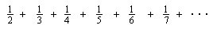

Sample Problems from Chapter 5
Chapter 5: The Harmonic Series
Take a try at this infinite series, known as the Harmonic series

Write a program on a calculator or computer to find the sum.
Ways
young people have solved these kinds of problems
To order Don's
materials
To choose sample problems from
other chapters
Mathman Home